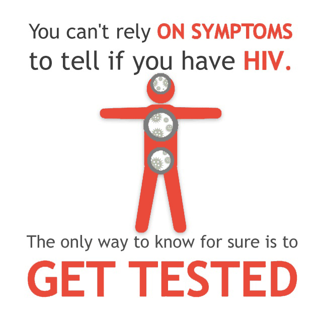
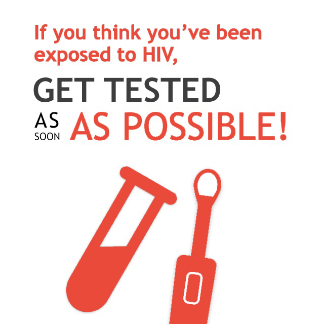
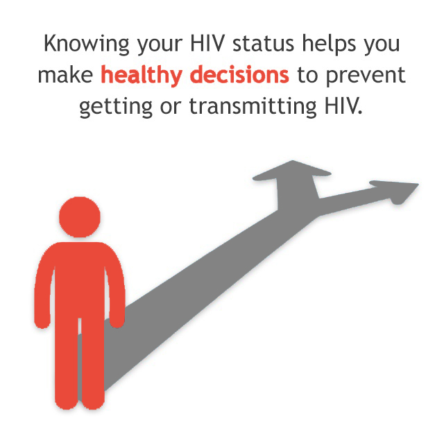

How Can I Tell If I Have HIV?
You cannot rely on symptoms to tell whether you have HIV. The only way to know for sure if you have HIV is to get tested. Knowing your status is important because it helps you make healthy decisions to prevent getting or transmitting HIV.
The symptoms of HIV vary, depending on the individual and what stage of the disease you are in: the early stage, the clinical latency stage, or AIDS (the late stage of HIV infection). Below are the symptoms that some individuals may experience in these three stages. Not all individuals will experience these symptoms.
Early Stage Of HIV
Some people may experience a flu-like illness within 2-4 weeks after HIV infection. But some people may not feel sick during this stage.
Flu-like symptoms can include:
- Fever
- Chills
- Rash
- Night sweats
- Muscle aches
- Sore throat
- Fatigue
- Swollen lymph nodes
- Mouth ulcers
You should not assume you have HIV just because you have any of these symptoms. Each of these symptoms can be caused by other illnesses. And some people who have HIV do not show any symptoms at all for 10 years or more.
If you think you may have been exposed to HIV, get an HIV test. Most HIV tests detect antibodies (proteins your body makes as a reaction against the presence of HIV), not HIV itself. But it takes a few weeks for your body to produce these antibodies, so if you test too early, you might not get an accurate test result. A new HIV test is available that can detect HIV directly during this early stage of infection. So be sure to let your testing site know if you think you may have been recently infected with HIV.
After you get tested, it’s important to find out the result of your test so you can talk to your health care provider about treatment options if you’re HIV-positive or learn ways to prevent getting HIV if you’re HIV-negative.
You are at high risk of transmitting HIV to others during the early stage of HIV infection, even if you have no symptoms. For this reason, it is very important to take steps to reduce your risk of transmission.
Clinical Latency Stage
After the early stage of HIV infection, the disease moves into a stage called the clinical latency stage (also called “chronic HIV infection”). During this stage, HIV is still active but reproduces at very low levels. People with chronic HIV infection may not have any HIV-related symptoms, or only mild ones.
For people who aren’t taking medicine to treat HIV (called antiretroviral therapy or ART), this period can last a decade or longer, but some may progress through this phase faster. People who are taking medicine to treat HIV the right way, every day may be in this stage for several decades because treatment helps keep the virus in check. (Read more about HIV treatment.)
It’s important to remember that people can still transmit HIV to others during this phase even if they have no symptoms, although people who are on ART and stay virally suppressed (having a very low level of virus in their blood) are much less likely to transmit HIV than those who are not virally suppressed.
Progression to AIDS
If you have HIV and you are not on ART, eventually the virus will weaken your body’s immune system and you will progress to AIDS (acquired immunodeficiency syndrome), the late stage of HIV infection.
Symptoms can include:
- Rapid weight loss
- Recurring fever or profuse night sweats
- Extreme and unexplained tiredness
- Prolonged swelling of the lymph glands in the armpits, groin, or neck
- Diarrhea that lasts for more than a week
- Sores of the mouth, anus, or genitals
- Pneumonia
- Red, brown, pink, or purplish blotches on or under the skin or inside the mouth, nose, or eyelids
- Memory loss, depression, and other neurologic disorders.
Many of the severe symptoms and illnesses of HIV disease come from the opportunistic infections that occur because your body’s immune system has been damaged. (Read more about opportunistic infections.)